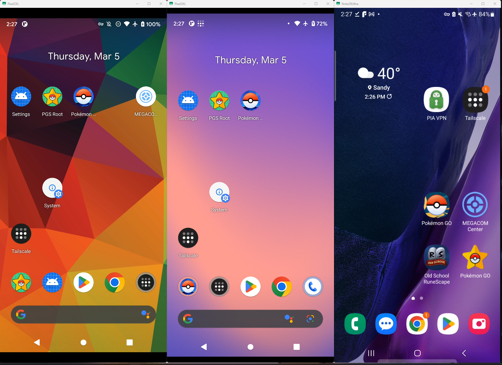
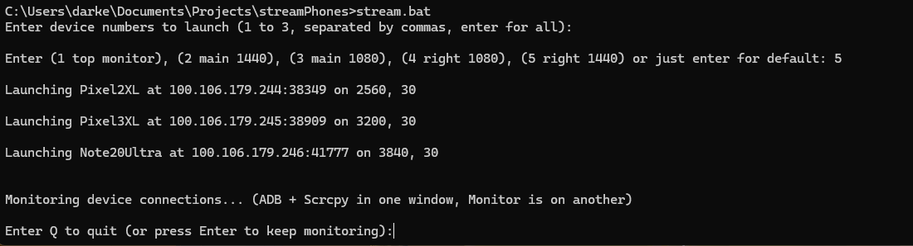
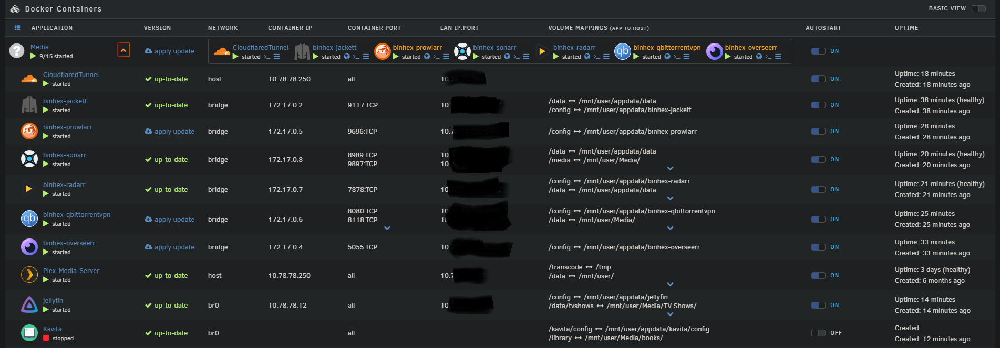
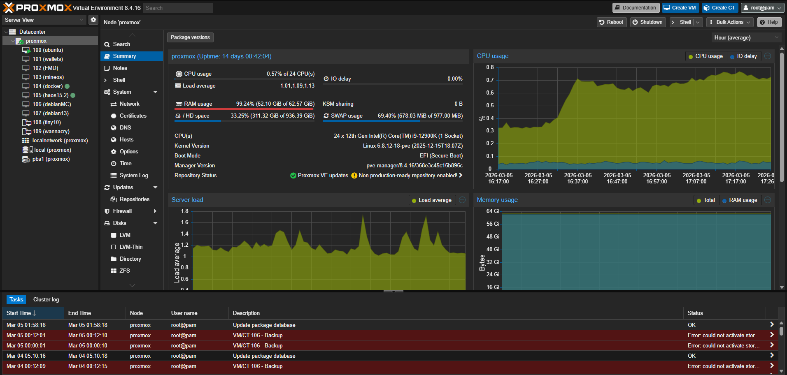

Each project starts as a short overview card. Click Open project to zoom into that card and reveal full details.
Family Shared Care home care app (internship)
Software engineering internship at Family Shared Care: a family
home care coordination app built in React and TypeScript,
packaged for Android and iOS with Capacitor, on a Supabase
backend.
Family Shared Care is an app that helps families coordinate
care for a loved one. It covers medications, appointments, health logs, family
chat, and caregiver management. One web codebase ships as a
web app and as native Android and iOS apps.
Highlights
Supabase Edge Functions for Stripe checkout and webhooks,
Google Play and Apple App Store purchase verification, and
caregiver invitations
Push notifications for family chat and timed task and
appointment reminders across Android, iOS (APNs), and web,
with per device notification type preferences
Database migrations with row level security, invited
caregiver and viewer account roles, and an account deletion
request queue with admin review
Hosted iOS builds and TestFlight uploads through Codemagic
Full stack web and mobile development from one codebase
Payment and in-app purchase integration across three stores
Database access control with row level security
Native push notification setup on Android and iOS
Shana persistent AI assistant runtime
Personal project: a Python runtime for a persistent AI assistant
with text and live voice conversation, selective memory, a
stable persona, and an optional streaming control plane.
The system runs as two applications: an assistant API that
owns conversation, memory, and voice, and a dashboard that
handles login, process control, and configuration. The
dashboard reaches the assistant only through its HTTP API.
Highlights
Swappable LLM, speech to text, and text to speech providers:
local models (Ollama, Faster-Whisper, Piper) or hosted
OpenAI APIs
Selective long term memory in SQLite and a Discord ingestion worker
Conversation decisions kept separate from delivered text, so
display and speech output route to explicit consumers,
including a performer output bus for streaming
A coding practice loop where a local model edits sandboxed
exercises, checks run in a read-only Bubblewrap namespace
with systemd resource limits, and failures become lessons
for the next cycle
Personal project in progress: a Windows Qt editor and an
authenticated HTTPS service for manga localization, from chapter
import through OCR, translation, lettering, and CBZ export.
The editor imports chapters, keeps source images in durable
storage, and sends work to a separate service for model
execution. Untrusted files are never parsed in the main
process.
Highlights
Untrusted image and archive parsing isolated in a sandboxed
Windows AppContainer with memory and CPU limits
Durable chapter storage with saved-text undo and redo
Draft lettering with licensed fonts
Folder import, source passage cleanup review, guarded
chapter jobs, and portable draft exports with verified
recovery
A supervised Linux runtime for the service with protected connection storage
Tech stack: Python, PyQt, OCR, machine
translation, HTTPS, Windows AppContainer
Streamphones multi phone control toolkit
Built a Windows automation toolkit for controlling multiple Android
phones from one PC with ADB over TCP and scrcpy, including launch,
layout, monitoring, reconnect, and relaunch behavior.
Streamphones automates multi phone management from a Windows PC
using configuration driven device definitions and per device
monitor loops. It handles WiFi drops, reboots, and scrcpy
failures so a multi device setup remains usable without
constant manual intervention.
Devices are defined in a simple text format:
deviceName, ip:port.

Multi-window Streamphones layout with active device sessions.

CLI controls for launch selection and monitor operations.
Impact
This project turned a fragile manual setup into a stable
dashboard style workflow where I can launch once and let the
system self heal when connections drop.
Highlights
Config driven device list and launch selection prompt
Layout presets with predictable multi window positioning
Per device monitor loop with scrcpy health checks
ADB reconnect loop with network reachability checks
Session IDs and lock files to prevent duplicate monitors
Shutdown flag support for clean exits
Optional brightness adjustment for unattended viewing
Tech stack: Windows batch scripting, ADB over
TCP, scrcpy, PowerShell networking checks, configuration driven
orchestration
Skills demonstrated
Windows automation and process orchestration
Reliability patterns with monitors, restart logic, and locks
Network aware reconnect tooling for TCP device endpoints
Configuration driven scaling for multi device workflows
Practical ADB and scrcpy operations in real conditions
Game automation framework
Built a modular Java game automation framework that handles task
flows, interaction selection, and UI edge cases using state based
logic and robust runtime checks.
I developed task nodes for a game automation framework with
reliable progression through interaction trees and UI prompts
that often cause runs to stall. I prioritized continuing
interactions when possible, then selecting options as a
fallback. I also added post flow widget cleanup so scripts
can continue without manual intervention.
Highlights
State based task flow with clear transitions
Interaction handling that checks continue before option selection
Widget interaction for dismissing completion prompts
Logging and debugging hooks for stuck states
Tech stack: Java, client API integration, UI
widget interaction, state machines, logging
Resume bullets
Implemented automation nodes with reliable interaction
selection and continuation checks to prevent stall loops
Added UI widget handling to close completion prompts
automatically and resume navigation
Improved script stability by introducing explicit state
gating so preparation steps only run when required
MCP/RAG documentation and community retrieval server
Built an MCP compatible ingestion and RAG retrieval pipeline
backed by PostgreSQL to support LLM assisted development using
indexed documentation and community content.
I created a server side pipeline to ingest documentation and
community data into PostgreSQL for development search
workflows. I validated ingestion quality with SQL checks and
identified rows where cleaned content was missing even when
raw content existed, then used those results to guide
pipeline fixes.
Highlights
Ingestion validation with SQL counts and null checks
Raw content and cleaned content field separation
Focus on RAG retrieval quality for developer questions
Built a Postgres backed knowledge store for documentation and
community content to improve LLM assisted coding workflows
Used SQL auditing queries to detect ingestion failures where
cleaned text was missing and prioritized fixes
Designed schema and pipeline steps to support future indexing
and retrieval improvements
Neo4j relationships and graph queries
Created and queried graph relationships in Neo4j to group and
retrieve contacts by derived attributes such as area codes.
I wrote Cypher queries to match contacts by properties, create
relationships based on shared area codes, query contacts by
relationship membership, and remove relationships when
requirements changed. The scripts were designed for repeatable
execution with consistent results.
Highlights
Relationship creation from property driven rules
Combined relationship and property filtering queries
Relationship deletion and rebuild workflows
Tech stack: Neo4j, Cypher
Resume bullets
Authored Cypher scripts to create and query area code
relationships among contact nodes
Built queries that return node data based on relationship
membership and attribute filters
Implemented relationship deletion steps to keep the graph
consistent as rules evolved
High Tech Cobblemon modded Minecraft server
High Tech Cobblemon is a custom Linux hosted Minecraft server with
roughly 400 mods, built to stay stable, playable, and maintainable
despite a very heavy mod load.
I set up and ran a heavily modded Minecraft server on Linux
for the High Tech Cobblemon pack, managing a large mod list
and the server environment needed to keep it running
reliably. The work focused on practical server operations,
compatibility management, and keeping performance acceptable
for real players.
Skills demonstrated
Linux server administration for game servers
Modpack and dependency management at large scale
Troubleshooting startup crashes and mod conflicts
Performance minded hosting and stability practices
Repeatable setup, config management, and maintenance
Highlights
Tuned Java memory and startup options for large mod loads
Used crash logs to resolve conflicts and stabilize launches
Maintained restart, backup, and maintenance routines
Configured networking and access controls for players
Maintained homelab services with containerization, VMs, mount
management, and permission troubleshooting across Linux and
Unraid.
I operate containerized workloads and virtual machines with a
focus on repeatable deployment, permission safety, and service
continuity. Work includes mount mapping, volume strategy,
networking setup, and root cause analysis when services fail
due to host level constraints.

VM view used to monitor service isolation and host utilization.

Proxmox host view used for VM orchestration and infrastructure management.
Highlights
Container lifecycle management with reproducible configs
Volume and SMB mount strategy for persistent data
Permission debugging across host and container boundaries
VM management and service isolation for lab workloads
Implemented maintainable language based custom formats and tagging
logic in Sonarr to classify dual audio, partial dual audio, dub,
and sub releases.
I configured Sonarr with custom formats inspired by community
standards and split dual audio detection into language pair
formats. I used tags to reflect content reality across dual,
partial, dub, and sub signals while avoiding conflicting tags
when releases include mixed attributes.
Highlights
Language pair custom formats for stronger classification
Tag semantics aligned to actual audio and subtitle coverage
Designed language detection custom formats and tags to
classify dual audio and sub only releases reliably
Implemented tag logic that avoids false signals while still
capturing mixed language edge cases
Deployed and maintained the workflow in Docker on Unraid for
consistent automation
Database design and query projects
Designed relational schemas from ER models and wrote SQL scripts to
enforce integrity and answer analytical queries.
I completed coursework projects covering conceptual modeling,
ER diagrams, table creation with constraints, controlled
primary key strategies, referential integrity testing, and
complex queries. I also worked with Sakila style data for join,
aggregation, and subquery assignments.
Highlights
ER model to schema translation
Referential integrity and null behavior testing
Join heavy query sets with aggregation and subqueries
Built normalized relational schemas from ER diagrams and
validated data integrity with constraint tests
Authored SQL query scripts using joins, aggregation, and
subqueries to solve dataset driven prompts
Tested edge conditions including null handling and
referential integrity enforcement
Real time video streaming and object recognition pipeline
Designed a low latency streaming pipeline and planned real time
object recognition overlays, focused on smooth frame delivery and
performance tuning.
I built a practical streaming setup where FFmpeg repeatedly
overwrites a single JPEG frame and serves it through an MJPEG
server. I tested ZeroMQ buffering adjustments for smoother
playback and then planned a threaded decode approach to
separate decoding from transport and reduce stalls.
FFmpeg writes frames at about 10 fps to
/tmp/mjpeg_frames/frame.jpg, served via
mjpg-streamer using the input_file
plugin on port 8082.
Highlights
MJPEG frame overwrite pattern for low overhead live preview
ZeroMQ transport tuning for smoother playback
Threading plan to isolate decode work and stabilize flow
Targeted continuous detection with bounding box overlays
Built a real time MJPEG streaming pipeline using FFmpeg
frame generation and mjpg streamer for live preview
Tuned transport buffering to improve smoothness and tracked
artifact tradeoffs for the next iteration
Planned a threaded decode architecture to reduce stalls and
improve visual stability for overlay workflows
Windows device toggle automation for foot pedal workflow
Automated Windows device enable and disable actions using pnputil
to support controlled macro workflow behavior.
I developed a workflow to disable and re enable a specific HID
device using pnputil after alternate disable approaches failed
due to device criticality checks. This supported safe timed
toggling as part of a larger automation pipeline.
Highlights
CLI device control using exact hardware instance ids
Implemented core data structures from scratch and debugged edge
cases with testing oriented workflows and careful validation.
I built a sorted list ADT in Python with insertion, removal,
search, iteration, and indexed access. I also implemented a
validated Course ADT, debugged binary search tree edge cases,
and built a custom HashMap ADT to cache recursive calculations
for large speedups.
Highlights
Input validation and defensive programming
Custom iterability and index support
Hash based caching to reduce redundant recursion work
Debugging of tree edge cases
Tech stack: Python, data structures,
recursion optimization, testing mindset
Resume bullets
Built from scratch data structures with validation,
iteration, and sorted behavior, then fixed edge case
failures
Implemented caching strategies that reduced repeated
recursion work and improved runtime performance
Diagnosed and corrected tree removal edge cases, including
root replacement and traversal consistency